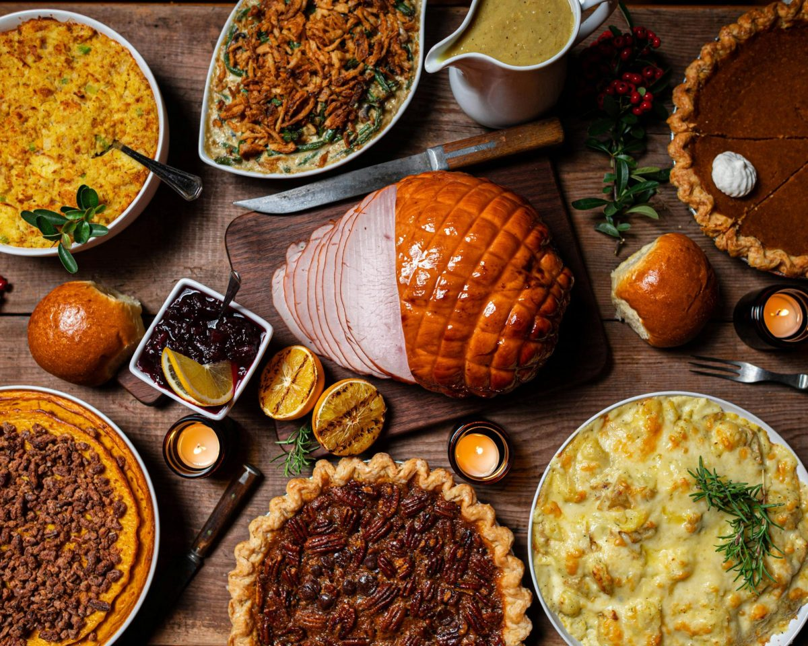
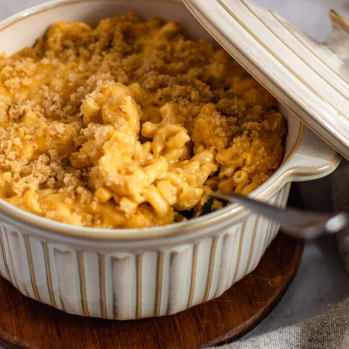

Delicious Traditional Recipes for family and friends

A big part of Thanksgiving is having a feast with family and friends and many delicious foods are served, like Mashpotatos, Ham, Turkey, Mac & Cheese, and many more delicious foods

Mac & Cheese is a big thanksgiving food and there are mnany differnt kinds and styles of it that familys eat.
Ingredients
For the pasta:
1 lb (16 oz) elbow macaroni
For the cheese sauce:
4 tbsp butter
4 tbsp all-purpose flour
3 cups milk (whole milk works best)
2 cups shredded sharp cheddar cheese
1 cup shredded mozzarella (optional but melty!)
1/2 tsp salt
1/2 tsp black pepper
1/2 tsp garlic powder (optional)
1/4 tsp paprika (optional)
Optional topping (for baked version):
1 cup breadcrumbs
2 tbsp melted butter
Extra shredded cheese
Instructions
1. Cook the pasta
Bring a large pot of salted water to a boil.
Add the macaroni and cook until al dente (usually 7–8 minutes).
Drain and set aside.
2. Make the cheese sauce
In a large pot, melt 4 tbsp butter over medium heat.
Add 4 tbsp flour and whisk for 1 minute to form a roux.
Slowly pour in the 3 cups milk, whisking constantly until smooth.
Cook for 3–5 minutes until it thickens.
Add the cheeses:
2 cups cheddar
1 cup mozzarella
Season with salt, pepper, garlic powder, and paprika.
Stir until melted and smooth.
3. Combine
Add the cooked macaroni into the cheese sauce and mix to coat evenly.
4. (Optional) Bake it
Preheat oven to 350°F (175°C).
Pour mac and cheese into a baking dish.
Mix breadcrumbs + 2 tbsp melted butter, sprinkle on top.
Add extra cheese if you want it extra cheesy.
Bake for 20–25 minutes until golden and bubbly.